Simulation of Hybrid Electricity Model & Economic Dispatch
The Natural Gas Price model, Temperature model and Electricity Price hybrid model are jointly simulated to create market scenarios. Then, given a set of plant parameters and constraints a dispatch is performed on each set of simulated price paths to compute a set of daily cash-flows for each plant for each scenario (simulated path). The expected profit from the distribution of cash-flows and the 90% and 95% cash-flow-at-risk metrics are reported
Contents
Load Models and Data
Import the required models (that have already been built), any required data (holidays) and set up the simulation parameters (date range and number of trials)
clear tempModel = load('SavedModels\TemperatureModel'); NGModel = load('SavedModels\NGPriceModel'); elecModel = load('SavedModels\ElectricityModel'); holidays = load('SavedModels\NEholidays'); startDate = '2010-04-16'; endDate = '2010-12-31'; dates = (datenum(startDate):1/24:datenum(endDate)+23/24)'; Ntrials = 500;
Perform Simulation
% Simulate Temperatures [simTemp, simTempStochastic] = simulateTemperature(tempModel, dates, Ntrials); % Simulate Natural Gas simNG = simulateNGPrices(NGModel, dates, Ntrials); % Simulate Electricity simElec = simulateElecPrices(elecModel, dates, Ntrials, simTemp, simTempStochastic, simNG, holidays.dates);
Visualize Paths
Modify the value of variable path and re-run the cell to display the simulated temperatures, natural gas prices and electricity prices for one realization or path in the simulation.
path = 1; ax1 = subplot(3,1,1); plot(dates, simTemp(:,path)); title('Temperature'); ax2 = subplot(3,1,2); plot(dates, simNG(:,path)); title('Natural Gas Prices'); ax3 = subplot(3,1,3); plot(dates, simElec(:,path)); title('Electricity Prices'); linkaxes([ax1 ax2 ax3],'x'); dynamicDateTicks([ax1 ax2 ax3], 'linked');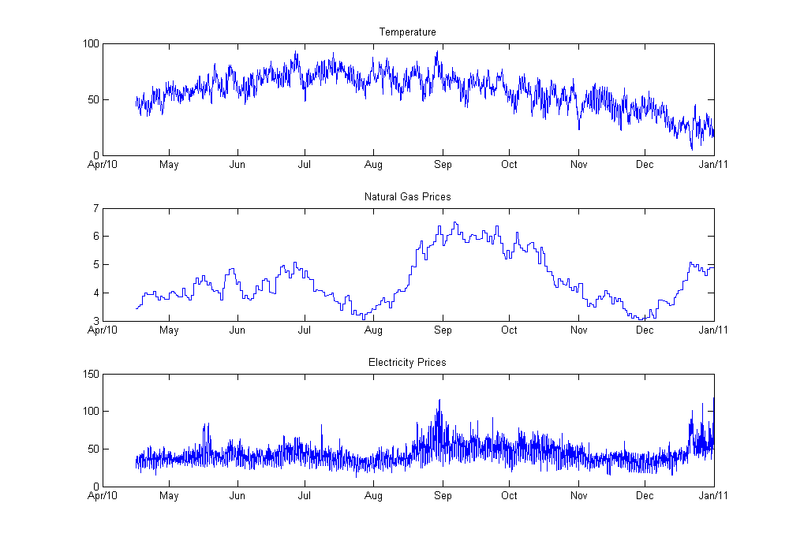
Visualize Multiple Paths
Loop through and visualize paths 2 through 10 to validate the results of the model
for path = 2:10 ax1 = subplot(3,1,1); plot(dates, simTemp(:,path)); title(['Temperature, path ' int2str(path)]); ax2 = subplot(3,1,2); plot(dates, simNG(:,path)); title('Natural Gas Prices'); ax3 = subplot(3,1,3); plot(dates, simElec(:,path)); title('Electricity Prices'); linkaxes([ax1 ax2 ax3],'x'); dynamicDateTicks([ax1 ax2 ax3], 'linked'); snapnow end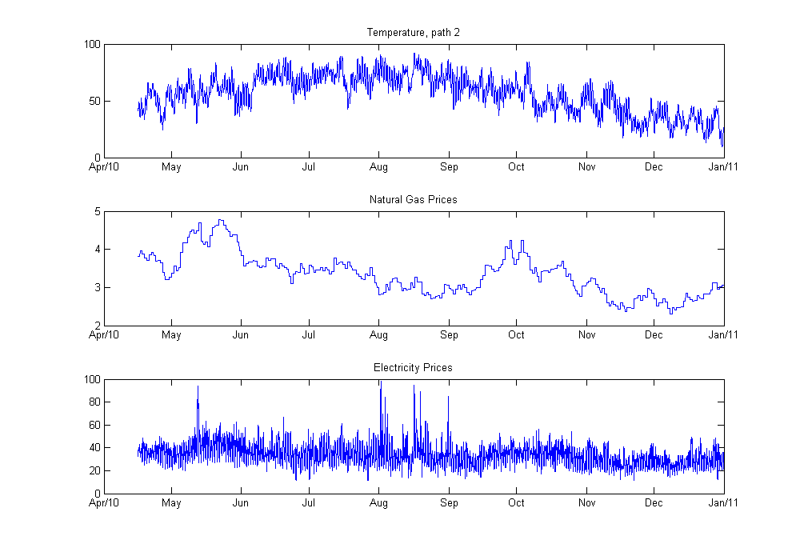 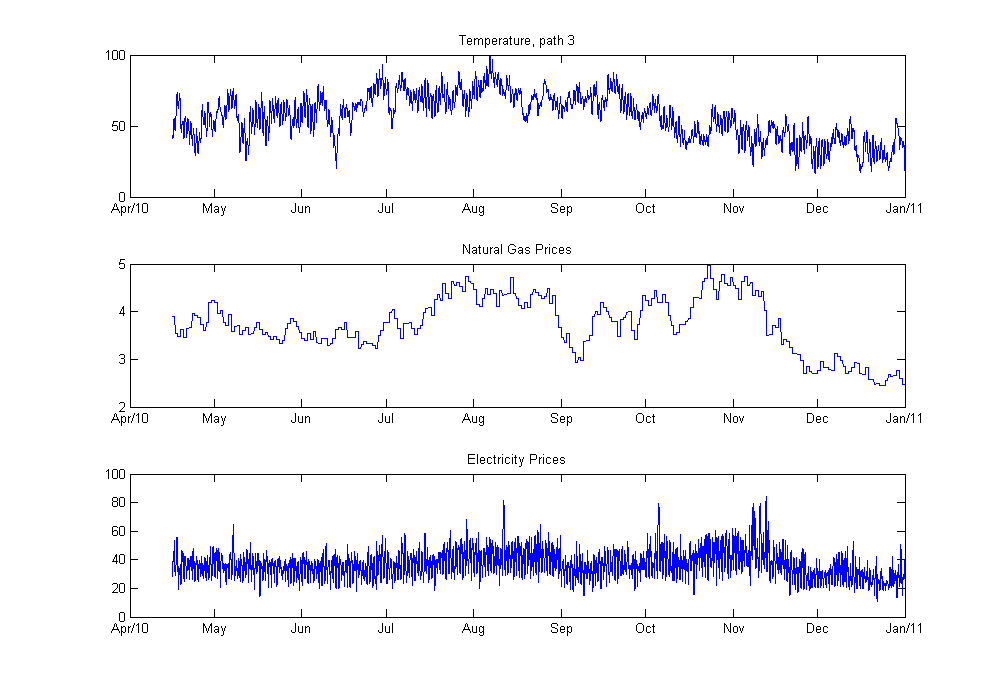 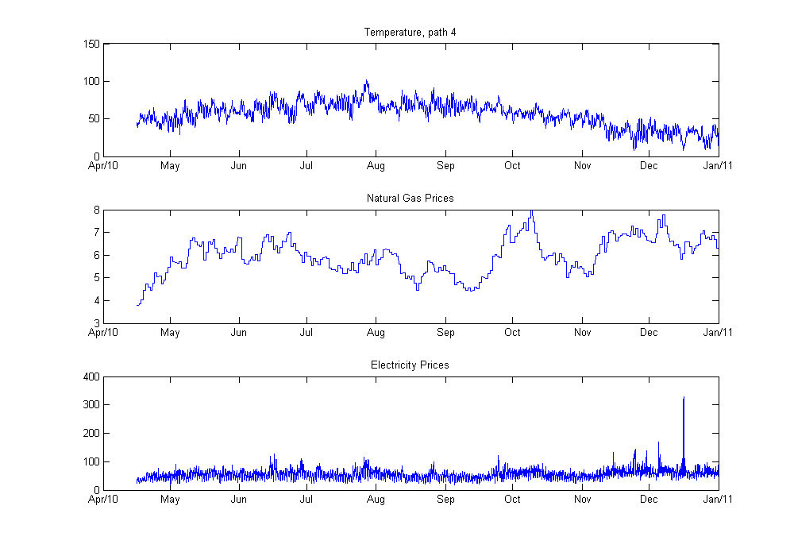 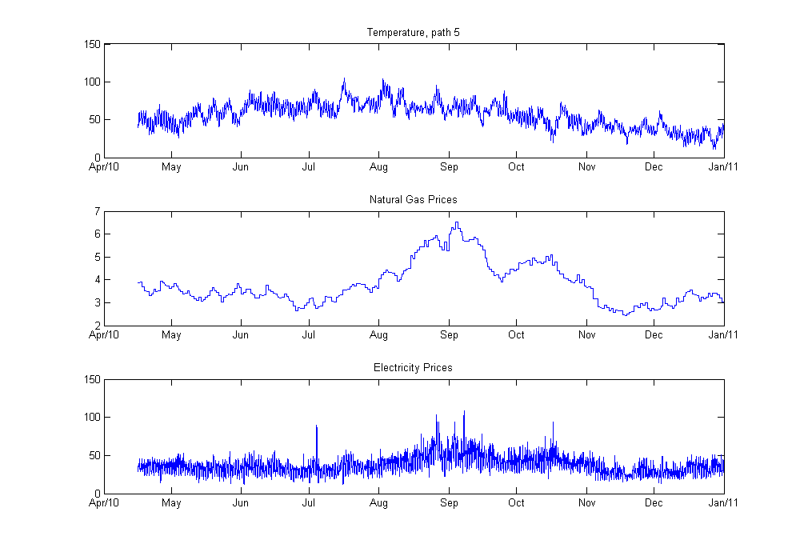 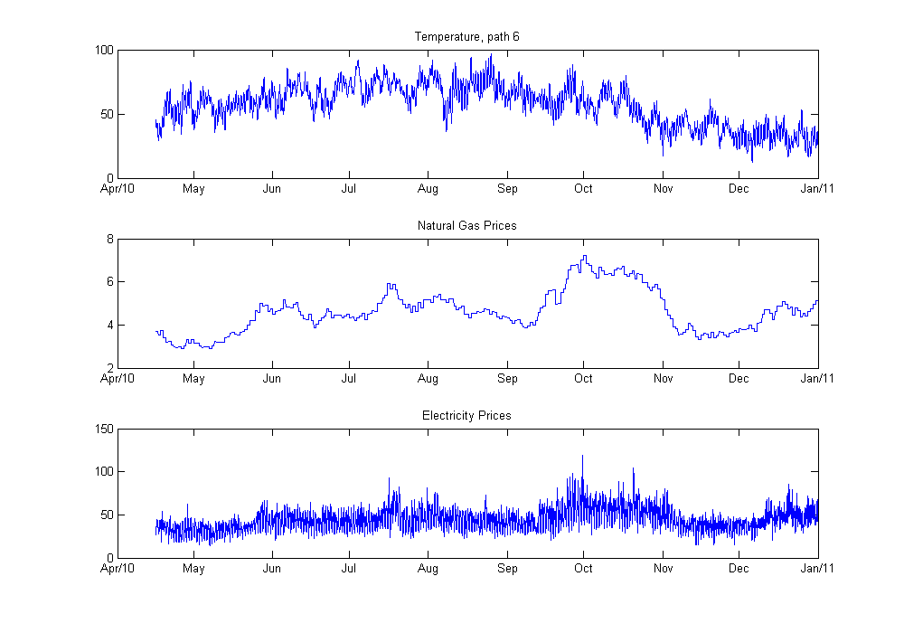 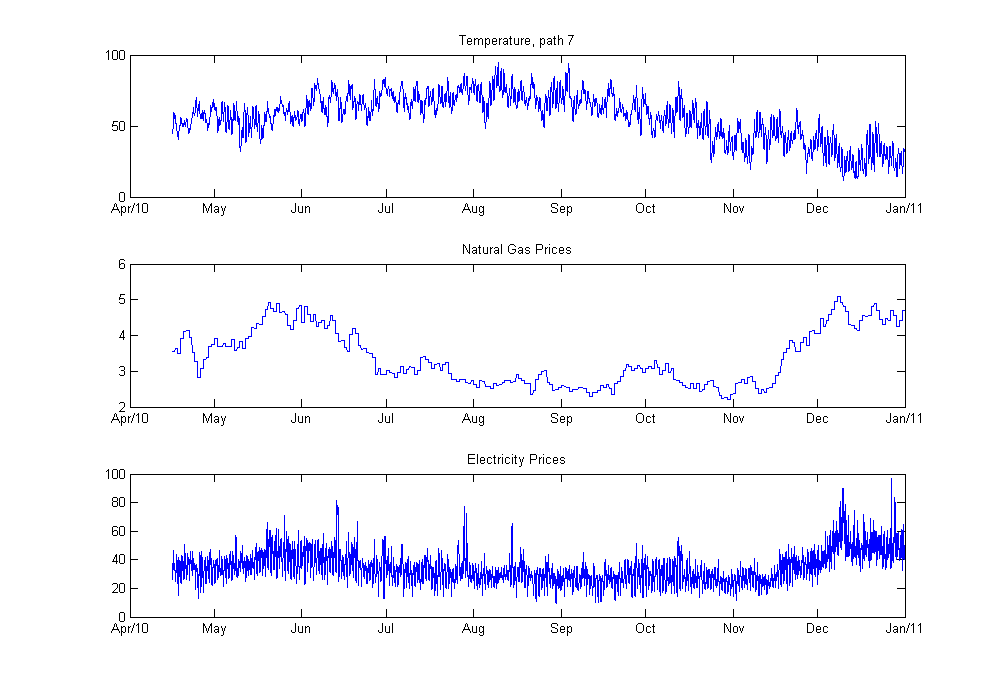 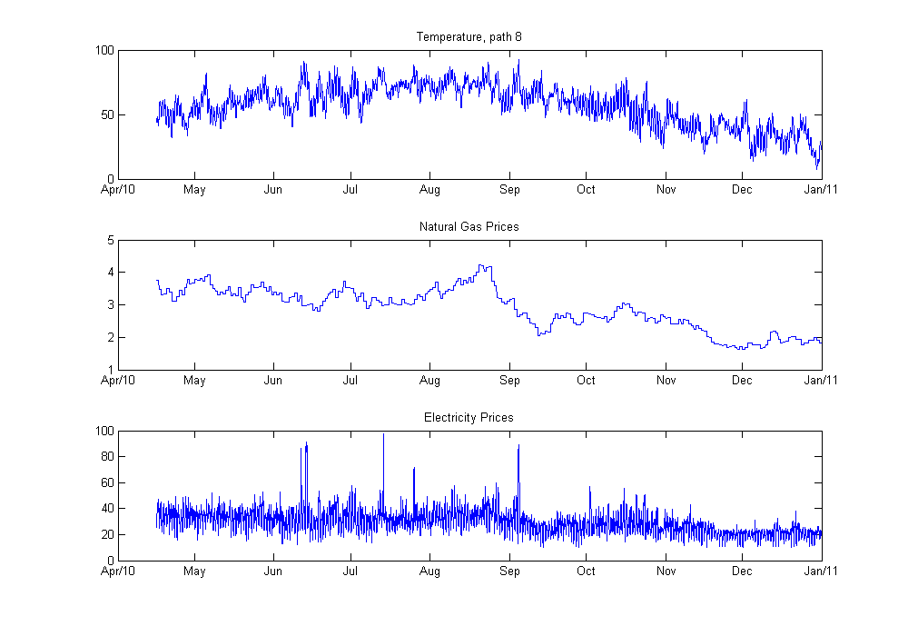 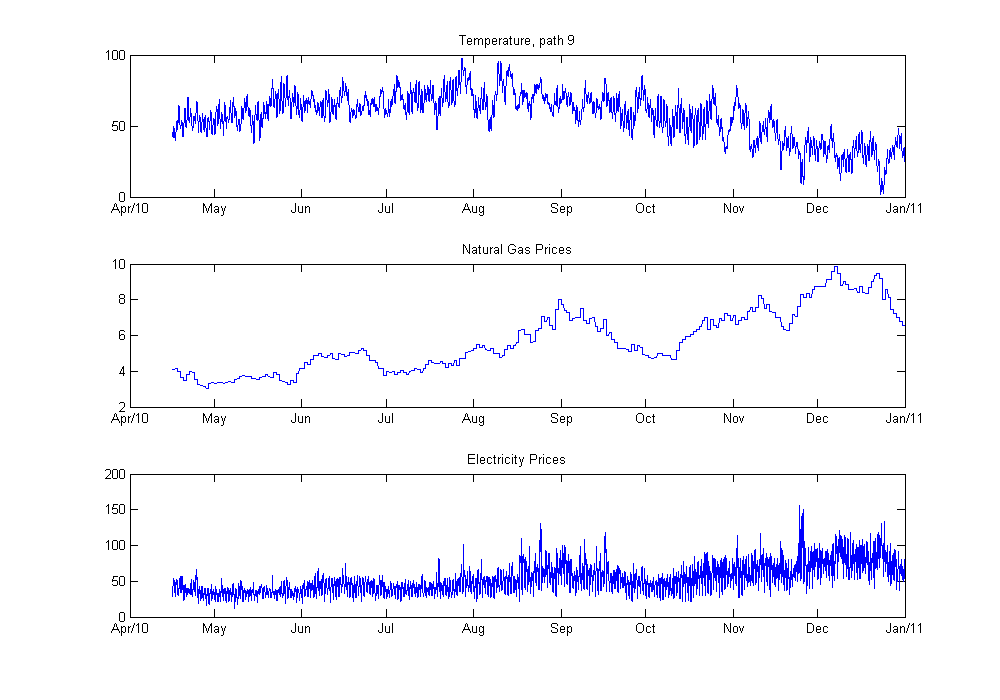 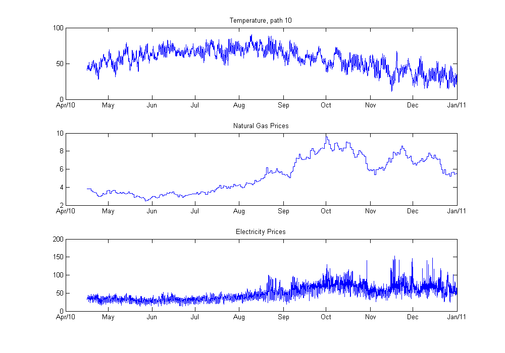
Define Power Plant Characteristics
Define the operating characteristics of a gas-fired plant. These can also be imported from the PlantRisk spreadsheet.
capacity = 100; % MW heatRate = 8500; % Btu/KWh VOMCosts = 3; % $/MWh minRun = 12; % hrs/day
Compute Optimal Dispatch for Single Path
For a chosen simulated path, the function dispatch is used to compute the optimal daily dispatch decisions for the power plant and to return a series of cashflows and operational statistics. Individual cash-flows are displayed in a stem plot.
path = 1; [profit, numOpDays, aveHrs, pctRun, earnings] = ... dispatch(capacity, heatRate, VOMCosts, minRun, simElec(:,path), simNG(:,path)); disp(['Path ' int2str(path) ' results:']); fprintf('Profit: $%0.4f M\nOperating Days: %d\nAverage Hours per Operating Day: %0.2f\nPercentage of Time Running: %0.2f%%\n\n\n',... profit/1e6, numOpDays, aveHrs, pctRun*100); figure stem(dates(1:24:end), earnings*capacity, 'fill', 'Markersize', 5, 'Marker', '.'); axis tight; dynamicDateTicks; xlabel('Date'); ylabel('Cash-flow (profit) ($)'); title(['Generator cash-flows per day, path' int2str(path)]);
Path 1 results: Profit: $2.9560 M Operating Days: 252 Average Hours per Operating Day: 15.25 Percentage of Time Running: 61.59%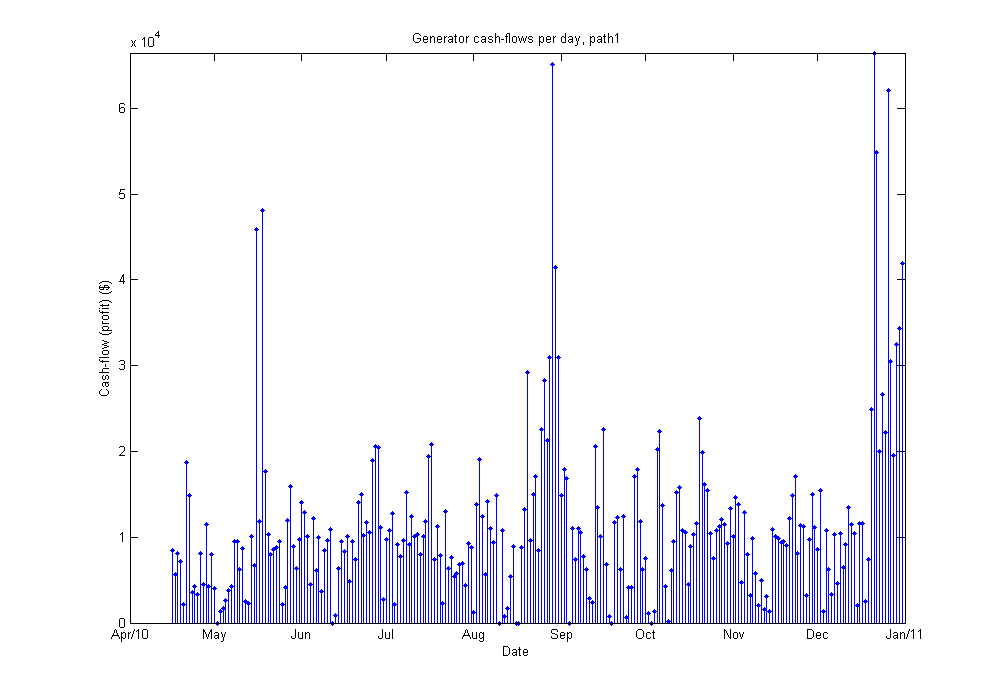
Compute Optimal Dispatch for All Paths
The same dispatch function can be used to generate total profit and operation statistics for all simulated natural gas and electricity price paths. The distribution of the resulting profits or total cash-flows can be analyzed to compute expected cash-flow and cash-flow-at-risk.
profit = zeros(1,Ntrials); numOpDays = zeros(1,Ntrials); aveHrs = zeros(1,Ntrials); pctRun = zeros(1,Ntrials); for path = 1:Ntrials [profit(path), numOpDays(path), aveHrs(path), pctRun(path)] =... dispatch(capacity, heatRate, VOMCosts, minRun, simElec(:,path), simNG(:,path)); end expProfit = mean(profit); numOpDays = mean(numOpDays); aveHrs = mean(aveHrs); pctRun = mean(pctRun); % Compute 90% and 95% Cash-flow-at-Risk CFaR = expProfit - prctile(profit, [10 5]); disp('Simulation Averages/Expectations'); fprintf(['Operating Days: %0.2f\nAverage Hours per Operating Day: %0.2f\n' ... 'Percentage of Time Running: %0.2f%%\nExpected Profit: $%0.4f M\n' ... '90%% Cash-flow-at-Risk: $%0.4f M\n95%% Cash-flow-at-Risk: $%0.4f M\n'],... numOpDays, aveHrs, pctRun*100, expProfit/1e6, CFaR(1)/1e6, CFaR(2)/1e6); figure; nhist = max(Ntrials/30,10); hist(profit/1e6, nhist); line(expProfit*[1 1]/1e6, ylim, 'Color', 'g'); line((expProfit-CFaR(1))*[1 1]/1e6, ylim, 'Color', 'r', 'LineWidth', 2); line((expProfit-CFaR(2))*[1 1]/1e6, ylim, 'Color', 'm', 'LineWidth', 2); legend('Cash-flow Distribution', 'Expected Profit', '90% CFaR', '95% CFaR') xlabel('Plant Cash-flows (Millions of $)'); ylabel('Count'); title('Plant Cash-flow Distribution');
Simulation Averages/Expectations Operating Days: 249.89 Average Hours per Operating Day: 15.13 Percentage of Time Running: 60.60% Expected Profit: $3.0910 M 90% Cash-flow-at-Risk: $0.6186 M 95% Cash-flow-at-Risk: $0.7209 M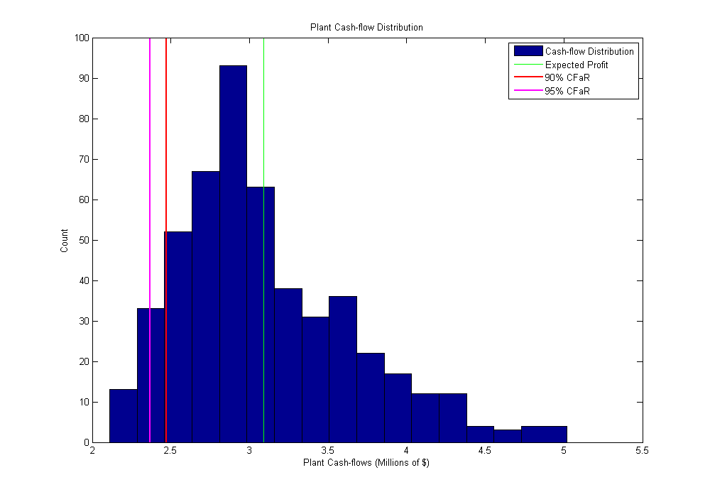